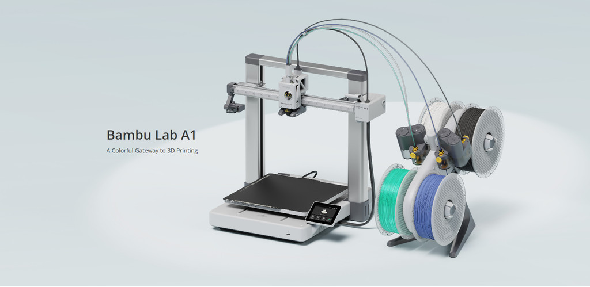

Build Volume: 256 × 256 × 256 mm
Core Features:
• Larger build volume than A1 Mini — ideal for bigger projects
• Full-auto calibration (bed leveling, Z-offset, vibration compensation, flow dynamics)
• High-speed printing up to 500 mm/s with 10,000 mm/s² acceleration
• Active Flow Rate Compensation with nozzle pressure sensor
• Quiet operation (under 48 dB in silent mode)
• Quick-swap nozzle (0.4 mm standard; supports 0.2 / 0.6 / 0.8 mm)
• Built-in camera for monitoring and timelapse
• Supports PLA, PETG, TPU and more engineering filaments
• Heated bed up to 100°C | Hotend up to 300°C
• Compatible with AMS Lite for multi-color printing
• 5" touch screen + robust steel + aluminum frame